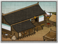

Requires
- Buildings:

Enables
- Buildings: 
Basic Building Statistics (can be modified by difficulty level, arts, skills, traits and retainers)
- Cost: 3000
- +200 to wealth from commerce in this province
- +15 per turn to town growth from commerce within this province
- Provides food: 2
- Enables recruitment of Rank 1 junsatsushi
Clan Effects
- Each economy chain building enables you to sustain one additional junsatsushi (to a maximum of 5)
Description
Only a fool eats everything after the harvest.
A granary increases the food available in a province, and greatly improves province growth. Food storage until the next harvest is very important to the functioning of any community. If no one can think beyond where their next meal might come from, there is no incentive to do very much other than look for that next meal. Once there is a reasonable degree of certainty that people will be able to eat tomorrow, the next day, next week and beyond, they can start planning for a future, and working towards it. It becomes worthwhile to improve your land, build a new workshop, or learn a new skill: you will live long enough to see the benefits of your efforts!